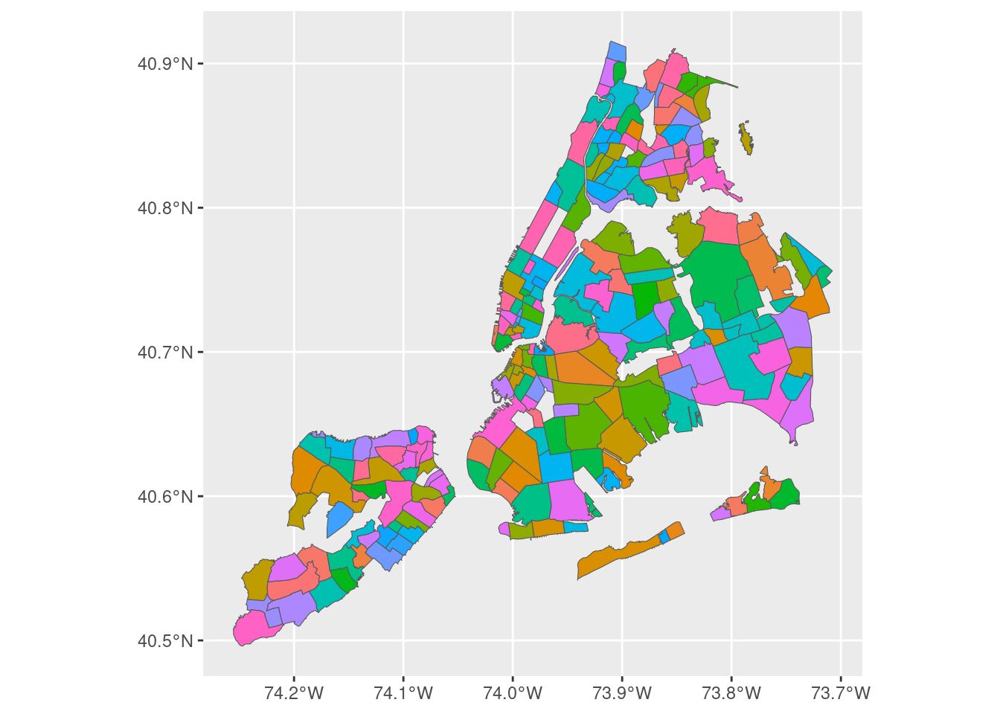

library(geojsonsf)
library(ggplot2)
nyc_geo <- geojson_sf("data/neighborhoods.geojson")
nyc_geo |> ggplot(aes(fill = neighborhood)) +
geom_sf() +
guides(fill = guide_none())
You have been given a dataset consisting of two files, nyc_airbnb_listings.csv and neighborhoods.geojson.
The goal of this assignment is to tell a visual story about the factors that differentiate profitable airbnbs from unprofitable airbnbs. You should imagine that you are either an analyst at airbnb looking for ways to help hosts become more profitable or to suggest to make suggestions about who should become a host, or a real estate investor looking to either acquire (or help manage) short term rental properties.
Based on your analysis, you can phrase your story in different ways (these are just suggestions):
The data file nyc_airbnb_listings.csv contains information on airbnb listings in New York City. It includes the nightly price of the listing, the modeled occupancy rate (in reality occupancy rates are not public, I did my best to find an accurate estimate which you can assume is true for the purposes of this assignment), information about the location and amenities of the listing, information about the host and other properties that they manage, and information about the satisfaction of the guests that stay at the listing. A data dictionary is included at the end of this document. The source of the data is the website https://insideairbnb.com/. Our dataset consistes only of listings that had a list price, were bookable, and had at least one review, and as such is substantially smaller than the original dataset.
Airbnb is an internet company that helps hosts list short term rentals. It competes with individual hotels and resorts and other short term rental websites, e.g. booking.com. Both users and hosts have profiles on the website, and receive reviews from the other party after a stay. Hosts range from individuals who own their own property and are renting out a single room, to companies which professionally manage a large number of rental properties. In New York City, airbnbs are regulated, and certain types of listings are banned (short-term rentals must be owner occupied), however compliance with this regulation may be less than 100%.
There are several factors to consider when tyring to understand if a given level of revenue is good or not. Properties should be compared as much as possible on an apples-to-apples basis, meaning that renting a room for a single occupant in a house in an unpopular neighborhood shouldn’t be directly compared to renting a 5 bedroom rooftop apartment in a neighborhood near tourist areas. When making comparisons factor in things like the size of the listing, the number of people it can accommodate, and the location.
You may build a predictive model of revenue of you would like, but it is not required, but build your presentation with a corporate but non-data science audience in mind. Depending on what story you decide to tell, you should consider the factors that will be changeable: a host can change the price of their listing or work to become a better host (with a higher response rate, superhost status, spend more effort cleaning the apartment, etc), or they can allow a better host to manage their listing, but they won’t be able to change the physical properties of their listing. An investor, on the other hand, can choose to look for certain types of properties in targeted neighborhoods, and airbnb can choose to advertise to people who have certain types of properties in targeted neighborhoods.
You are encouraged to research factors that might make an airbnb profitable especially if you are stuck. Here are two basic websites with some suggestions if you need a starting point:
Most of the variables in this data file are described on the data dictionary page of insideairbnb.com:
However, I have created a few additional variables which are important for the assignment:
occupancy: The fraction of nights in the past year where this airbnb was booked. This quantity is modeled using by webscraping airbnb each month and looking at the fraction of days in the next month where the airbnb is unavailable. The methodology for this is imperfect, occupancy is at best a crude approximation and at worth a step above synthetic data, so please don’t go start a business based on the results of this assignment!revenue: This is the price of the airbnb times the occupancy rate. This is equal to the revenue per nightoccupancy_level: This variable categorizes listings into three categories, Low, Medium, and High occupancy. The levels are 33% or less occupancy, 33% to 66% occupancy, and greater than 66% occupancyborough: The borough of the listingsn_amenities: Count of number of amenities in JSON of the ‘amenities’ column. You may also engineer your own version or consider specific amenities.neighborhood: The neighborhood of the listing. This is Inside Airbnb’s neighbourhood_cleansed field, renamed.neighbourhood_group: Identical to borough. This is the neighborhood designation from the original dataset. You can use ‘borough’ instead.price_per_accommodates: price divided by accommodates, nightly price per maximum number of guests.bathrooms_shared: TRUE when the listing’s bathroom is shared rather than private, parsed from bathrooms_text.Mapping isn’t required, but could be useful for your story. You can use geojsonsf to read a geojson file into a sf file and then join on neighborhoods. A simple code example which plots the neighborhoods is the following:
library(geojsonsf)
library(ggplot2)
nyc_geo <- geojson_sf("data/neighborhoods.geojson")
nyc_geo |> ggplot(aes(fill = neighborhood)) +
geom_sf() +
guides(fill = guide_none())